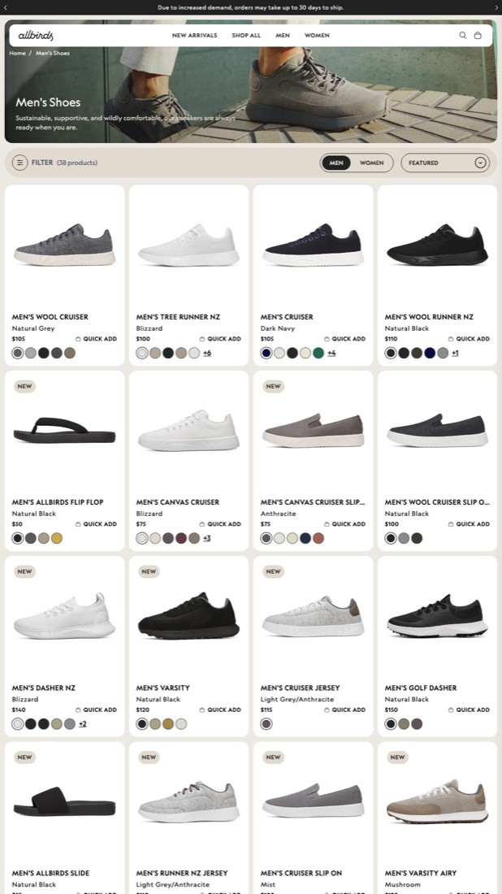
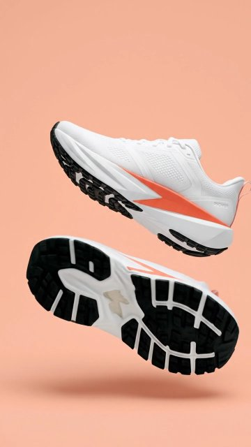

Promer AI · YouTube · plan tổng · cập nhật 29/10/2026
Plan YouTube Promer AI: Shorts và video dài
Một trang theo dõi mọi video của kênh: quy trình, plan từng video, trạng thái từng bước và storyboard. Người xem là chủ shop bán trên Shopify; mỗi video cho họ một cách làm quảng cáo dùng được ngay từ ảnh sản phẩm của chính họ.
Người xem: merchant e-commerce bán trên ShopifyGiọng: Emma, có phụ đềShorts: 7 video, 20–30 giâyVideo dài: 10 video, tối thiểu 8:30
Phần 1
Quy trình làm video
Ba tầng plan. Mỗi video đi qua từng bước, xong bước nào dừng lại để duyệt rồi mới làm bước sau. Không hẹn ngày; chỉ ghi thứ tự ưu tiên.
Ba tầng plan
Tầng
Trả lời câu hỏi gì
Ở đâu
1. Plan kênh
Kênh nói với ai, từ khoá nào, làm những video nào, theo thứ tự nào
Plan kênh high-intent (bản nguồn 03_YouTube/plan/PLAN_YOUTUBE_v2_HIGH-INTENT.md)
2. Plan tổng Shorts, video dài
Mỗi video: angle, hook, idea, nguồn ý tưởng, đang ở bước nào
Trạng thái trên mỗi thẻ: xongđang làmchờ duyệtchưa làm
Phần 2
Shorts: 7 video cho merchant Shopify
Mỗi video lấy một tấm ảnh sản phẩm, đưa vào Promer AI và ra ba bản quảng cáo để merchant chọn bản đem đi test. Dài 20–30 giây. Từ video 03, mỗi video một cách triển khai riêng (plan v3, lấy ý tưởng từ Pinterest).
Chỉ dùng cho 02. Từ chiều 29/10 bỏ khung chung: video 03–08 mỗi video một flow riêng, ghi ở dòng "Cách triển khai v3" trên từng thẻ.
1 · 0–1,5 giây
Quảng cáo đã xong (hoặc trước/sau) hiện ngay, câu hook gọi merchant Shopify
2 · đến 3,5 giây
Lộ ra: tất cả chỉ từ một ảnh sản phẩm
3 · đến 7 giây
Trong Promer AI: tick 3 ý tưởng gợi ý, bấm Generate. Không phải gõ prompt
4 · drop nhạc
Ba bản quảng cáo thật, mỗi bản một nhịp, số to Ad 1, 2, 3
5 · cuối
"Which one would you test? Comment 1, 2 or 3" + logo Promer AI
Đã sửa theo review 29/10
Bỏ cảnh gõ prompt: Promer tự gợi ý, người dùng chỉ tick.
Kết quả hoặc trước/sau hiện trong 1–2 giây đầu.
Hook đánh vào một nhu cầu cụ thể, khoảng 8 chữ.
Thử hai kiểu mở: cho xem kết quả trước, hoặc hỏi nỗi lo trước.
Halloween đổi thành Black Friday; túi xách thêm góc Black Friday.
Một kết bài chung cho cả 7 video, có câu hỏi kéo bình luận.
Phụ đề cho người xem tắt tiếng, chữ quan trọng to, tránh vùng nút bấm.
Rút gọn còn 20–30 giây, bỏ khoảng nghỉ thừa.
Câu mở nói thẳng video dành cho ai
Trong 1–2 giây đầu, giọng đọc gọi đúng tên người xem và một nhu cầu cụ thể, ví dụ Shopify sellers: one photo, three shoe ads. Màn hình có thêm chữ nhỏ "For Shopify sellers". Người đúng tệp biết video nói với họ.
Mỗi video mở bằng một vấn đề merchant gặp hằng ngày với ảnh sản phẩm của ngành đó, rồi cho thấy Promer AI giải vấn đề đó từ chính tấm ảnh ấy. Phép thử: merchant xem xong biết mình làm được gì với ảnh của shop mình.
Hook khoảng 8 chữ (giọng Emma đọc 2,6 đến 3,4 chữ mỗi giây, đo từ Shorts #01). Mỗi video gọi một nền tảng: Shopify trước; nền tảng khác để ở hashtag #ecommerce #dropshipping và video dài.
Bảy Shorts

02Giày · Hit the groundĐã lên lịch · 20:00 29/10 (9:00 AM New York)
Một ảnh, nhiều bản để testCho xem kết quả trướcĐã có 3 video Promer thật
Vì sao chọn
50.520 shop giày trên Shopify, gấp khoảng 3,5 lần shop kính
Thời trang là ngành trả tiền cho Promer nhiều nhất: 36% người trả phí
Thư viện Promer có 3.657 template giày (shoes + sneakers), nhiều nhất trong 12 ngành đã quét
Ảnh giày đứng yên không cho thấy độ êm, độ bật; video cho thấy đúng chỗ đó
Vấn đề shop
Trang shop toàn ảnh giày tĩnh; muốn có nhiều bản quảng cáo để test mà không chụp lại.
Số shop Shopify
50.520 shop giày
Hook
"Shopify sellers: one photo, three shoe ads." Merchant Shopify: một ảnh, ba quảng cáo giày.
Bản đã đăng
26,4 giây · tiêu đề "How to Turn a Sneaker Photo Into a Video Ad With AI" · thumbnail khung hook
Ba bản
Giày bay lơ lửng · góc máy thấp trời xanh · lao tới bắn nước (video Promer đã tạo)
Người xem tìm gì
Cách biến ảnh sản phẩm thành video quảng cáo; ý tưởng quảng cáo cho shop giày Gõ trên YouTube: "product photo to video ai" · "shoes marketing ideas"
03Nước hoa · Black FridayBước 2 Idea · chờ duyệt plan v3
Mùa Black FridayHỏi nỗi lo trướcThay video Halloween
Vì sao chọn
Review 29/10: Halloween sát ngày, Short không đẩy kiểu evergreen; BFCM mới là thứ merchant quan tâm
Black Friday 27/11/2026: còn gần 4 tuần để video được tìm thấy
Từ khoá "perfume ad ideas" ưu tiên P0, 10,7 triệu view; thư viện Promer có 1.275 template nước hoa
Đã có sẵn chai nhãn Promer, ảnh điện thoại và video Promer từ Shorts #01
Cách triển khai v3
Tờ báo: tờ báo xoay vào khung, tít "BLACK FRIDAY: YOUR ADS AREN'T READY"; ảnh chai trên báo cử động, lật trang sang bản quảng cáo tiếp. Ý tưởng từ pin "The Scent Times".
Vấn đề shop
Sắp Black Friday mà chưa có quảng cáo mùa lễ, không kịp chụp mới.
Số shop Shopify
Chưa có số riêng nước hoa
Hook
"Shopify sellers, Black Friday ads not ready?" Merchant Shopify, quảng cáo Black Friday chưa xong?
Người xem tìm gì
Quảng cáo Black Friday cho shop; ý tưởng quảng cáo nước hoa Gõ trên YouTube: "black friday ads shopify" (chưa đo hạng) · "perfume ad ideas"
04Son · Break the glassBước 2 Idea · chờ duyệt plan v3
Không chụp lạiHỏi nỗi lo trước
Vì sao chọn
Từ khoá "lipstick ad ideas" ưu tiên P0, 13,8 triệu view
Nhóm làm đẹp: 18% người trả phí cho Promer
Merchant son thiếu ý tưởng hơn thiếu ảnh: video cho một ý tưởng làm được ngay
Kéo người xem sang video dài về son
Cách triển khai v3
Nét son làm chuyển cảnh: mỗi nét son quét ngang khung lau sang bản quảng cáo tiếp, một cú máy liền; nét cuối viết chữ "Promer". Ý tưởng từ pin bảng 9 mẫu son quẹt.
Vấn đề shop
Cần quảng cáo son mới nhưng không muốn tổ chức buổi chụp mới.
Số shop Shopify
Cả nhóm chăm sóc da và cơ thể: 218.354 shop (chưa có số riêng son)
Hook
"Shopify sellers: new lipstick ad, no reshoot?" Quảng cáo son mới mà không phải chụp lại? Cảnh kính vỡ hiện ngay giây đầu.
Người xem tìm gì
Ý tưởng quảng cáo son khác với các shop khác Gõ trên YouTube: "lipstick ad ideas"
Công tắc giao diện: nút gạt kiểu iPhone "Studio: OFF → ON", "Story: OFF → ON", "Motion: OFF → ON" đặt lên ảnh; mỗi lần gạt cảnh đổi. Ý tưởng từ pin "dry skin: OFF".
Vấn đề shop
Chỉ có ảnh chai trên kệ, không nói được thành phần.
Số shop Shopify
Cả nhóm chăm sóc da và cơ thể: 218.354 shop (chưa có số riêng serum)
Hook
"Shopify skincare brands, don't just show the bottle." Brand skincare trên Shopify, đừng chỉ cho xem cái chai. (review: hook ổn, giữ)
Người xem tìm gì
Cách quảng cáo mỹ phẩm, skincare ngoài ảnh chai trên kệ Gõ trên YouTube: "cosmetic marketing ideas" · "ugc skincare ads"
06Đồng hồ · Every secondBước 2 Idea · chờ duyệt plan v3
Làm mới creativeCho xem kết quả trước
Vì sao chọn
Từ khoá "watch ad ideas", "watch paid ads youtube"
Thư viện Promer có 1.136 template đồng hồ; mẫu đồng hồ được dùng nhiều nhất trong các mẫu mới (24 lượt)
Đồng hồ bán bằng chi tiết mặt số, mà ảnh cổ tay hay bị loá
Kéo người xem sang video dài 5 dạng quảng cáo
Cách triển khai v3
Zoom vô tận một cú máy: máy lao vào mặt số, xuyên qua là bản quảng cáo tiếp, lặp 3 lần, lùi ra thấy đồng hồ trên trang shop. Ý tưởng từ pin Casio mặt số thành đường cao tốc.
Vấn đề shop
Ảnh cổ tay bị loá, không thấy chi tiết mặt số; quảng cáo cũ cần làm mới.
Số shop Shopify
Cả nhóm phụ kiện: 197.961 shop (chưa có số riêng đồng hồ)
Hook
"Shopify watch sellers: show every detail." Shop đồng hồ trên Shopify: cho thấy từng chi tiết. (6 chữ)
Người xem tìm gì
Ý tưởng quảng cáo đồng hồ, quảng cáo đồng hồ trên YouTube Gõ trên YouTube: "watch ad ideas" · "watch paid ads youtube"
Từ khoá "jewelry advertising ideas", "ads for jewelry"
Thư viện Promer có 1.339 template trang sức
Đồ nhỏ, khó chụp đẹp bằng điện thoại: chỗ AI giúp được nhiều nhất
Đúng mùa quà tặng cuối năm, kéo sang video dài trang sức
Cách triển khai v3
Ghép hình: khung quảng cáo mùa lễ thiếu một mảnh, "Missing a piece?"; mảnh cuối là ảnh nhẫn chụp điện thoại, cả bức tranh sống dậy. Ý tưởng từ pin "Missing a Piece?".
Vấn đề shop
Đồ nhỏ, khó chụp, ảnh trên khay nhung trông rẻ.
Số shop Shopify
Cả nhóm phụ kiện: 197.961 shop (chưa có số riêng trang sức)
Hook
"Shopify sellers: turn one ring photo into a holiday ad." Biến một ảnh nhẫn thành quảng cáo mùa lễ. Câu thứ hai: "Small product, hard to shoot?"
Người xem tìm gì
Cách quảng cáo trang sức, đồ nhỏ khó chụp Gõ trên YouTube: "jewelry advertising ideas" · "ads for jewelry"
08Túi xách · Bloom · Black FridayBước 2 Idea · chờ duyệt plan v3
Mùa Black Friday, quà tặngCho xem kết quả trước
Vì sao chọn
Nhóm phụ kiện: 197.961 shop trên Shopify
Thư viện Promer có 1.430 template túi xách
Thời trang là ngành trả tiền cho Promer nhiều nhất: 36% người trả phí
Review 29/10: lồng ghép Black Friday
Cách triển khai v3
Quảng cáo giả ngoài đời (FOOH): túi khổng lồ trên nóc taxi giữa phố ngày Black Friday, hoa nở bung; cắt về ảnh túi trên móc "this was one photo". Ý tưởng từ pin túi đỏ trên taxi New York.
Vấn đề shop
Ảnh túi treo trên móc, không có không khí quà tặng mùa Black Friday.
Số shop Shopify
Cả nhóm phụ kiện: 197.961 shop (chưa có số riêng túi)
Hook
"Shopify sellers: one bag photo, three Black Friday ads." Một ảnh túi, ba quảng cáo Black Friday.
Người xem tìm gì
Mẫu video quảng cáo cho shop thời trang, phụ kiện Gõ trên YouTube: "clothing store ad video template" · "clothing brand ad creative"
• 50.520 shop giày đang hoạt động, khoảng 1,6% trong 3.189.133 shop Shopify • Khoảng 5,9% nhóm thời trang (862.961 shop), đứng thứ 4 trong nhóm • Ở Mỹ: 16.758 shop (33,2%) • Nhiều gấp khoảng 3,5 lần shop kính (14.382)
Thời trang là ngành trả tiền cho Promer nhiều nhất
36% người trả phí là thời trang; giày thuộc nhóm này (chưa có số riêng)
Thư viện Promer có nhiều mẫu giày
• "shoes": 2.152 template • "sneakers": 1.505 template • Cộng lại đứng đầu 12 ngành đã quét
Merchant đang tìm
• "shoes marketing ideas": từ khoá chính của trang Ad Concept • Trang Image to Video: 76,7 trong 100 lượt vào bấm vào app
Ảnh tĩnh thiệt nhất với giày
Điểm bán của giày là độ êm, độ bật khi bước; ảnh trên sàn không cho thấy, video thì cho thấy
Vì sao là đôi giày này
Chỉ có sản phẩm, không có người: AI Ad Animation không dựng được người thật.
Ba bản khác nhau rõ: lơ lửng trên nền san hô, góc máy thấp trời xanh, lao tới bắn nước.
Đôi giày phổ thông: giày chạy bộ trắng sọc cam; merchant bán sneaker nào cũng thấy giống hàng mình.
Nguồn số shop: Store Leads, cập nhật 23/10/2026. Số người trả phí, template và trang đích: số đo nội bộ của Promer. Chưa có: số merchant giày đang dùng Promer, số lượt tìm "shoes marketing ideas" trên YouTube.
Cách chọn hashtag
Năm hashtag đầu xếp theo thứ tự: #shopify (gọi đúng tệp) · hashtag ngành · hashtag việc merchant muốn làm · #aiads · #shorts. Thêm #ecommerce #dropshipping ở cuối để mở sang tệp ngoài Shopify (review 29/10). Hashtag lấy từ chính từ khoá merchant gõ trên YouTube (dòng "Người xem tìm gì"), viết liền không dấu cách.
YouTube hiện 3 hashtag đầu ở trên tiêu đề, nên 3 cái đầu là tệp, ngành và việc. Chưa đo số lượt xem theo từng hashtag; đo sau 7 ngày trong YouTube Studio.
Video 02 đã có đủ 3 bản. Promer có lựa chọn video rẻ hơn, chưa thử chất lượng. Chưa tính lượt tạo lại khi video lỗi. Giọng đọc ElevenLabs tính riêng.
Phần 3
Video dài: 10 video đầu tiên
Xếp theo thứ tự làm trong plan kênh: video đã ra đơn trả phí và hợp mùa Black Friday lên trước. Xong video này mới làm video sau; không hẹn ngày.
Khổ: 16:9, khung khoảng 10 phútTối thiểu: 8:30 sau khi cắtThao tác app: UI Promer dựng trong AE, không quay màn hìnhĐầu ra trong UI: tạo thật trong Promer AI
Luật chung của video dài
Mở 0–3 giây bằng giọng gọi Shopify sellers, … + chữ nhỏ "For Shopify sellers". Thành phẩm hiện ngay giây đầu rồi mới lật ra ảnh gốc. Mỗi video một cách triển khai riêng, ghi nguồn ý tưởng (link, số đo, lấy gì, đổi gì).
Trước khi làm và trước khi báo xong phải trả lời: vì sao người xem dừng lại, họ mang về được gì (dùng được cả khi không dùng Promer), xem xong họ làm gì khác.
Không hứa doanh thu, ROAS; sản phẩm demo là thương hiệu giả, ghi "AI-generated · Fictional brand". Tạo video Promer từng cái một, tắt âm thanh.
Mười video dài
Hũ nến nhãn Promer: tạo ở bước Key visual
#01Product Image to Video AIBước 1 Content · chờ duyệt
Thứ tự làm: 1M3 · đang tìm công cụAI Ad AnimationNhà cửa · nến thơm (bản 2)
Vì sao chọn
Trang đích tốt nhất cả plan: 77 trong 100 lượt vào bấm vào app, 32 đăng ký
Từ khoá P0: 9/10 video top đúng chủ đề, 759K view video dài, cao nhất 515K
Video top của Eigi (138K, 4 ngày) chấm AI có giữ đúng bao bì, logo: người xem quan tâm "giữ đúng sản phẩm", kênh chưa nói
Video dài đầu tiên: đo thật công làm và credit
Angle
Video AI hay làm sai sản phẩm: nhãn méo, chữ nhoè, hình biến dạng. 5 lỗi, nguyên nhân và cách sửa để video giữ đúng hàng thật.
Câu mở
"Shopify sellers: did AI just change your product?" Hình: hũ nến thật cạnh khung video AI có nhãn đang chảy méo.
Tiêu đề
Product Image to Video AI Without Changing Your Product (5 Mistakes to Fix)
Từ khoá
product image to video ai · ai product animation tutorial · product photo to video ai free
Lấy ý tưởng từ
LunaAi "Turn ONE Photo into a Cinematic AI Commercial" (114K view) · taysthetic "how i turn product images into (animated) video ads" (515K view). Lấy: mở bằng thành phẩm, đặt ảnh tĩnh cạnh video. Đổi: nói với chủ shop, thêm phần giữ đúng nhãn và hình chai.
Người gõ "ai video product review generator" trên Google đã trả tiền 2 đơn
Từ khoá P0: 10/10 video top đúng chủ đề, 307K view
Làm đẹp: 18% người trả phí
Cần tài khoản trả phí mới xuất được UGC
Angle
Nói với merchant, không nói với freelancer: UGC ad cho chính sản phẩm của bạn, và vì sao phần lớn UGC AI trông giả.
Câu mở
"Shopify sellers: most AI UGC ads look fake. Here's why." Hình: 3 clip UGC chạy liền, rồi một clip lỗi (nhãn méo, tay cầm sai). (câu mở "Shopify…" là đề xuất theo luật 28/10, kịch bản 27/10 chưa có)
Tiêu đề
How to Make Realistic AI UGC Ads for Your Product (No Creators Needed)
Từ khoá
realistic ai ugc ads · ai ugc video generator · ai product review videos
Lấy ý tưởng từ
Nafay 3D "Complete AI UGC Ads Masterclass" (85K) · Youri van Hofwegen "How to Make Realistic UGC Ads with AI" (79K, 3 tuần). Lấy: quy trình đủ bước, mở bằng thành phẩm. Đổi: nói với merchant, gọn 10 phút, một app.
Dàn ý 10 phút (12 đoạn, kịch bản 27/10)
0:00–0:12AI-generated creators0:12–0:30Spot the problem?0:30–1:15Creator: cost + wait1:15–2:30Review → Script2:30–3:45Main · Side · Label · In hand3:45–5:00Pick the format first5:00–6:15Match your customer6:15–7:15Hook · Problem · Product · CTA7:15–8:00Label · Hands · Lip sync8:00–8:45Real product · real claims8:45–9:30Test with AI · scale with what works9:30–10:00AI-generated creator · Fictional brand · Credits: [đo khi làm]
Storyboard: chưa làm (bước 4)
#07Ecommerce Video Ads: 1 sản phẩm, 5 khổBước 1 Content · chờ duyệt
Thứ tự làm: 3M3Kết nối Shopify · nhiều tính năngPhụ kiện · đồng hồ
Vì sao chọn
Người gõ "e commerce video ads" trên Google đã trả tiền 2 đơn
"how to create video ads for shopify": 10/10 đúng chủ đề, 327K view
Đồng hồ hợp nhiều khổ hình
Angle
Một sản phẩm trong shop Shopify ra 5 khổ video quảng cáo, không rời danh sách sản phẩm.
Câu mở
"Shopify sellers: one product, five video ads." Hình: Lưới 5 video quảng cáo cùng một chiếc đồng hồ, mỗi khổ một khung. (câu mở "Shopify…" là đề xuất theo luật 28/10, kịch bản 27/10 chưa có)
Tiêu đề
How to Create Video Ads for Your Shopify Store With AI (5 Formats)
Từ khoá
e commerce video ads · how to create video ads for shopify · how to create video ads with ai free
Lấy ý tưởng từ
Google Ads của Promer, cụm "e commerce video ads" (5 đăng ký, 2 đơn) · sheet research "how to create video ads for shopify". Lấy: luồng kết nối Shopify → chọn sản phẩm → làm video. Đổi: 5 khổ từ một sản phẩm.
Dàn ý 10 phút (13 đoạn, kịch bản 27/10)
0:00–0:101 product · 5 video ads0:10–0:35From your Shopify product list0:35–1:001 Hero · 2 Lifestyle · 3 UGC · 4 Offer · 5 Every size1:00–2:00Connect Shopify → pick a product2:00–2:45Dial · Side · Strap · On wrist2:45–4:001 · Hero4:00–5:152 · Lifestyle5:15–6:303 · UGC style · AI-generated creator6:30–7:304 · Offer · Offer in the first 2 seconds7:30–8:305 · Every size · 9:16 · 4:5 · 1:18:30–9:15Dial text sharp · Offer in 2s · Text in safe zone · Price matches · Right product page9:15–9:40Publish to Meta9:40–10:00Time: [đo khi làm] · Credits: [đo khi làm] · AI-generated · Fictional brand
Storyboard: chưa làm (bước 4)
#06Lipstick Ad Ideas · góc Black FridayBước 1 Content · chờ duyệt
Thứ tự làm: 4M1Ad Library · Ad Concept · Ad AnimationLàm đẹp · son
Vì sao chọn
"lipstick ad ideas" P0: 13,8 triệu view video dài
9/10 video top là xem ví dụ ⇒ mở bằng ví dụ rồi mới dạy làm
Black Friday 27/11/2026: đăng càng sớm càng hợp mùa
Angle
Quảng cáo son hay đều làm giống nhau vài điều. Xem, rút bài học, rồi làm một bản cho son của bạn.
Câu mở
"Shopify beauty brands: great lipstick ads all do the same 5 things." Hình: Chuỗi cảnh cận son rất nhanh (đã làm mờ brand) → chữ "They all do the same 5 things". (câu mở "Shopify…" là đề xuất theo luật 28/10, kịch bản 27/10 chưa có)
Tiêu đề
Lipstick Ad Ideas for Beauty Brands (and How to Make Them With AI)
Từ khoá
lipstick ad ideas · lipstick commercial · cosmetic marketing ideas
Lấy ý tưởng từ
Sheet research "lipstick ad ideas" (10/10 đúng chủ đề, 9/10 là xem ví dụ). Lấy: dạng ví dụ trước, cách làm sau. Đổi: mỗi ví dụ rút 1 bài học, kết bằng bản làm cho brand mình.
Dàn ý 10 phút (13 đoạn, kịch bản 27/10)
0:00–0:10They all do the same 5 things0:10–0:355 ideas → 1 ad for your brand0:35–1:00Filter: lipstick1:00–2:001 · Color is the hero2:00–3:002 · Light shows the finish3:00–4:003 · Show the swatch4:00–5:004 · Motion in second one5:00–6:005 · One offer · Hook · Product · Proof · CTA6:00–6:30Your turn6:30–7:30Same structure · your product7:30–8:45Color · Light · Motion · Keep the shape8:45–9:30Offer in the first 2 seconds · 9:16 · 4:5 · 1:19:30–10:00Credits: [đo khi làm] · AI-generated · Fictional brand
Storyboard: chưa làm (bước 4)
#08AI Jewelry AdsBước 1 Content · chờ duyệt
Thứ tự làm: 5M1Photoshoot · Ad Concept · Ad AnimationTrang sức · dây chuyền
Vì sao chọn
Trang xem quảng cáo theo ngành đông người vào nhất: 2.488 lượt / 90 ngày
"ai jewelry ads": 10/10 đúng chủ đề, tổng 52K view: ít đối thủ
Góc quà tặng mùa lễ
Angle
Trang sức là đồ nhỏ, khó chụp, thuê studio đắt. Một tấm ảnh điện thoại đủ ra cả bộ ad, nếu biết kiểm chi tiết.
Câu mở
"Shopify jewelry sellers: this ad started as a phone photo." Hình: 3 bản ad dây chuyền chạy liền → cắt về ảnh điện thoại gốc trên bàn. (câu mở "Shopify…" là đề xuất theo luật 28/10, kịch bản 27/10 chưa có)
Tiêu đề
How to Make Jewelry Ads for Your Store With AI (From a Phone Photo)
Từ khoá
ai jewelry ads · jewelry advertising ideas · cinematic jewelry video
Lấy ý tưởng từ
Sheet research "ai jewelry ads" (6 video dạy làm, 4 ví dụ) · "jewellery ad with ai" (7/10 video top dưới 5K view). Lấy: mở bằng 3 bản ad. Đổi: hướng dẫn đủ bước, phần kiểm chi tiết.
Dàn ý 10 phút (11 đoạn, kịch bản 27/10)
0:00–0:12(hình, không chữ)0:12–0:301 phone photo → 3 ads0:30–0:501 Photo · 2 Studio · 3 Static ad · 4 Video · 5 Check0:50–2:00Light on metal · Real size · Sharp details2:00–3:00Window light · Plain surface · Close-ups3:00–4:30Step 2 · AI Photoshoot4:30–5:45Step 3 · Static ad · Gift angle5:45–7:00Step 4 · AI Ad Animation · Keep the shape7:00–8:30Pendant · Chain · Clasp · Stone8:30–9:15Product page · Gift ad · Reels9:15–10:00Credits: [đo khi làm] · Time: [đo khi làm] · AI-generated · Fictional brand
Storyboard: chưa làm (bước 4)
Chưa có hình: tạo ở bước Key visual
#03Clothing Brand AdsBước 1 Content · chờ duyệt
Thứ tự làm: 6M2AI Photoshoot · Ad AnimationThời trang · áo len
Vì sao chọn
Thời trang: 36% người trả phí, ngành lớn nhất
/ad-prompt đông người vào nhất trong các trang công cụ: 466 lượt
Chưa có số đăng ký nên xếp sau các video đã ra đơn
Angle
Đưa quần áo của bạn lên người mẫu và thành video quảng cáo, không cần đặt lịch chụp.
Câu mở
"Shopify clothing brands: no model, no studio, still a real ad." Hình: Ảnh áo len nhàu trên giường → 4 ảnh người mẫu mặc chính chiếc áo đó bật ra. (câu mở "Shopify…" là đề xuất theo luật 28/10, kịch bản 27/10 chưa có)
Tiêu đề
How to Make Clothing Brand Ads With AI (No Studio, No Model)
Từ khoá
how to make clothing brand ads with ai · ai clothing ads · clothing ads with ai
Lấy ý tưởng từ
Isa does AI "EXACTLY How to Create Fashion Ads with AI" (19.797 view, top 1 từ khoá) · Jack Vs. AI "How to Make Fashion Ads with AI" (68.954). Lấy: đi thẳng từng bước, mở bằng kết quả bất ngờ. Đổi: brand nhỏ, thêm phần kiểm chi tiết sản phẩm.
Dàn ý 10 phút (11 đoạn, kịch bản 27/10)
0:00–0:10No model. No studio.0:10–0:30Phone photo → model photo → video ad0:30–1:15Clear product · right model · outfit first1:15–2:30Front · Back · Fabric · Label2:30–4:00Step 2 · AI Photoshoot4:00–5:15Edit with words5:15–6:30Stitching · Pattern · Color · Label6:30–7:15Fix the input, not the output7:15–8:30Step 5 · AI Ad Animation8:30–9:15Product page · Feed · Reels9:15–10:00AI-generated model · Credits: [đo khi làm]
Storyboard: chưa làm (bước 4)
Chưa có hình: tạo ở bước Key visual
#04Find Winning Ads on FacebookBước 1 Content · chờ duyệt
Thứ tự làm: 7M2AI Ad Spy · Ad Library · Ad CloneThời trang
Vì sao chọn
Nhóm từ khoá lớn nhất: 118 ý tưởng video, 51 cái P0
Kéo được người chưa biết Promer AI
Nhưng 100 lượt vào chỉ 2 người đăng ký, nên để sau
Angle
Đừng đoán quảng cáo nào chạy tốt: xem quảng cáo đã chạy lâu trong ngành, đọc vì sao nó chạy, rồi làm phiên bản của bạn.
Câu mở
"Shopify sellers: brands don't keep paying for ads that don't work." Hình: Lưới 5 quảng cáo thời trang (đã làm mờ logo), mỗi ô có số ngày đang chạy. (câu mở "Shopify…" là đề xuất theo luật 28/10, kịch bản 27/10 chưa có)
Tiêu đề
How to Find Winning Facebook Ads in Your Niche and Remake Them for Your Store
Từ khoá
how to find winning ads on facebook · how to spy on competitors meta ads · fb ads library
Lấy ý tưởng từ
Blake Bauer "Facebook Ad Library To Find Winning Ads (2026)" (56K) · Atria "Steal any ad (legally)…" (228K). Lấy: đi từng bước trong thư viện. Đổi: không dùng chữ "steal", chỉ giữ cấu trúc, làm phiên bản cho sản phẩm mình.
Dàn ý 10 phút (10 đoạn, kịch bản 27/10)
0:00–0:15Running: [đọc trong thư viện]0:15–0:40Find · Read · Remake · Don't copy0:40–1:40Long run · Many versions · Many placements1:40–3:00Niche · Country · Days running3:00–3:45Search by brand3:45–6:15Hook · Format · Offer · Pace6:15–7:00This month's pattern7:00–8:30Same structure · your product8:30–9:15Don't copy: logo · people · copy9:15–10:00Test, don't guess
Storyboard: chưa làm (bước 4)

#05Static vs Video AdsBước 1 Content · chờ duyệt
Thứ tự làm: 8M3AI Ad Clone · Ad AnimationGiày sneaker
Vì sao chọn
Dẫn về trang tốt nhất (77 trong 100 lượt bấm vào app)
"meta static ads" 416K, "how to make static ads with ai" 244K view
Trùng trang với #1 nên để cách xa #1
Angle
Đừng hỏi "ảnh hay video tốt hơn". Làm cả hai từ cùng một tấm ảnh, chạy song song, để số đo trả lời.
Câu mở
"Shopify sellers: static or video? Make both from one photo." Hình: Hai quảng cáo giày cạnh nhau (ảnh tĩnh, video), chữ "Which one would you run?". (câu mở "Shopify…" là đề xuất theo luật 28/10, kịch bản 27/10 chưa có)
Tiêu đề
How to Turn Static Image Ads Into Video Ads for Your Online Store
Từ khoá
static image ads vs video ads · how to make static ads with ai · meta static ads
Lấy ý tưởng từ
Sheet research "meta static ads", "how to make static ads with ai". Lấy: mở bằng quảng cáo tĩnh đang chạy, chỉ ra điểm chung. Đổi: biến chính ảnh đó thành video để so.
Dàn ý 10 phút (12 đoạn, kịch bản 27/10)
0:00–0:12Which one would you run?0:12–0:40Don't guess. Test.0:40–1:001 Static · 2 Video · 3 Make both · 4 Test1:00–2:15Fast to read · Easy to change2:15–3:15Headline · Offer · Product big3:15–4:15Shows motion · Holds attention4:15–5:45Same structure · your product5:45–7:15Subject · Motion · Light · Camera · Keep7:15–8:00Logo sharp? · Sole real?8:00–9:00Same budget · Same audience · Compare: CTR · CPC · Sales9:00–9:35Static first · Video when it moves · Test both9:35–10:00Credits: [đo khi làm] · AI-generated · Fictional brand
Storyboard: chưa làm (bước 4)
Chưa có hình: tạo ở bước Key visual
#10Best AI Ad Generator for ShopifyBước 1 Content · chờ duyệt
Thứ tự làm: 9M4 · đang so công cụNhiều tính năngThời trang · 1 sản phẩm
Vì sao chọn
100 lượt vào trang có 17 người đăng ký
"free ai ad generator" P0: 477K view video dài
Kênh hãng tự so thì khó tin: làm khi đã có vài video hướng dẫn, nói cả chỗ Promer thua
Angle
Một sản phẩm, một yêu cầu, 5 công cụ, chấm công khai theo thứ merchant cần. Promer AI cũng bị chấm.
Câu mở
"Shopify sellers: same product, five AI ad tools. Which ad would you run?" Hình: Lưới 5 ad cùng một chiếc áo, che tên công cụ. (câu mở "Shopify…" là đề xuất theo luật 28/10, kịch bản 27/10 chưa có)
Tiêu đề
How to Choose an AI Ad Generator for Shopify (I Tested 5 Tools)
Từ khoá
ai ad generator · free ai ad generator · creatify alternative
Lấy ý tưởng từ
Sheet research "free ai ad generator" · Ryan Collins "Fable 5.1 vs GPT-6 Astra: AI UGC Ad…" (65K trong 5 ngày). Lấy: cùng đầu vào, test lần lượt, chấm. Đổi: so công cụ làm ad, không so model.
Dàn ý 10 phút (12 đoạn, kịch bản 27/10)
0:00–0:121 · 2 · 3 · 4 · 50:12–0:40Promer AI is one of the five0:40–1:301 Real product · 2 Ready to post · 3 Fixes needed · 4 Cost per usable ad · 5 Video1:30–2:00Same photos · Same brief2:00–3:10Tool 1 · [tên]3:10–4:20Tool 2 · [tên]4:20–5:30Tool 3 · [tên]5:30–6:40Tool 4 · [tên]6:40–7:50Have an example → Clone · No idea → Concept · Clear idea → Prompt7:50–8:50Bảng điểm [đo khi làm]8:50–9:25Where Promer AI lost9:25–10:00Pick by what you need
Storyboard: chưa làm (bước 4)
Chưa có hình: tạo ở bước Key visual
#09UGC Ad ExamplesBước 1 Content · chờ duyệt
Thứ tự làm: 10M1–M3AI UGC Ads · AI actorLàm đẹp · serum
Vì sao chọn
"ai avatar ads" P0: 1,7 triệu view, cao nhất 728K
"ugc skincare ads" P0: 1,36 triệu view
Kéo người xem sang #2 nên làm sau #2; 100 lượt vào chỉ khoảng 5 đăng ký
Angle
Xem 5 kiểu UGC ad đang dùng nhiều, hiểu vì sao từng kiểu hiệu quả, rồi làm một bản cho sản phẩm của mình.
Câu mở
"Shopify sellers: same script, three AI actors. Which one would you test?" Hình: Cùng một lời thoại, 3 người AI khác nhau nói liền nhau. (câu mở "Shopify…" là đề xuất theo luật 28/10, kịch bản 27/10 chưa có)
Tiêu đề
How to Make UGC Ads for Your Product Like These Examples (AI, 2026)
Từ khoá
ugc ad example · ai avatar ads · ugc skincare ads
Lấy ý tưởng từ
Sheet research "ai avatar ads", "ugc skincare ads". Lấy: cùng script thử 3 AI actor; mở bằng vài UGC ad skincare. Đổi: phần cách làm rút gọn, dẫn sang #2.
Dàn ý 10 phút (13 đoạn, kịch bản 27/10)
0:00–0:15AI-generated creators0:15–0:35Which one would you test?0:35–1:001 Testimonial · 2 Problem → solution · 3 Unboxing · 4 Before / after · 5 Voiceover review1:00–2:001 · Testimonial · Sounds like a friend2:00–3:002 · Name the problem first3:00–3:503 · What arrives at the door3:50–4:404 · Only real results4:40–5:305 · No face needed5:30–6:30New product → Problem → solution · Has reviews → Testimonial · Visual product → Unboxing6:30–8:15Format → Actor → Script → Video8:15–9:00Test the closest match first9:00–9:35Check hands · Check the label9:35–10:00Next: Realistic AI UGC Ads · AI-generated creator · Fictional brand
Storyboard: chưa làm (bước 4)
Luật 29/10 · không video nào trùng nội dung, hình ảnh, concept, idea
Bảng đối chiếu trùng lặp
Đối chiếu mọi video: video kênh đã đăng, Shorts 01–08, video dài 01–10. Trùng là các video tự tranh người xem với nhau. Ô nào trùng thì sửa ở bước Content của video đó, trước khi gửi duyệt.
Chỗ trùng
Các video dính
Hướng sửa
"Một ảnh sản phẩm → quảng cáo" làm lời hứa chính
Kênh: "How to Find Your First Ad Idea From a Product Photo" · Shorts 01, 02, 06, 07, 08 · dài #01, #05, #08
Chỉ Shorts dùng lời hứa này (mỗi Short một cách kể). Video dài mỗi video giữ một vấn đề riêng của merchant
Nước hoa
Shorts 01 · Shorts 03 (Black Friday) · dài #01
#01 đổi sản phẩm. Shorts 03 cũng nên đổi (đang dùng lại video của Shorts 01)
Serum
Shorts 05 · dài #02 · dài #09
#02 và #09 dùng hai sản phẩm khác nhau
Son
Shorts 04 · dài #06
Giữ một trong hai, hoặc khác hẳn loại son, cách kể
Đồng hồ
Shorts 06 · dài #07
Như trên
Trang sức, "ảnh điện thoại → quảng cáo mùa lễ"
Shorts 07 (nhẫn) · dài #08 (dây chuyền)
Trùng cả sản phẩm lẫn lời hứa: đổi một bên
Giày
Shorts 02 · dài #05
#05 đổi sản phẩm
Áo len dùng chung
Dài #03, #04, #10
Mỗi video một sản phẩm thời trang khác
UGC
Kênh: "Create Scroll-Stopping UGC Ads", Short "AI UGC Ads Without Filming" · dài #02, #09
#02, #09 phải có góc kênh chưa nói (kênh đã có video dạy làm UGC)
Làm lại quảng cáo thắng
Kênh: "Video Ad Clone Tutorial", Short "Saved Plenty of Ads" · dài #04
#04 tránh dạy lại thao tác Ad Clone; đi vào cách đọc vì sao quảng cáo chạy
Đăng thẳng lên Meta
Kênh: Short "Launch Them Straight to Meta Ads" · dài #07
#07 bỏ phần này hoặc chỉ nhắc 1 câu
Tìm góc quảng cáo mới
Kênh: Short "10 Ads, Same Idea? Find New Ad Angles" · dài #06
#06 đi vào bài học từ quảng cáo son thật, không dạy lại Ad Concept
Cảnh tick ý tưởng gợi ý, khung bình chọn 1/2/3
Shorts 02
Không dùng lại ở video khác
Mở bằng quảng cáo xong rồi lật ra ảnh gốc
Shorts 01, 02 · dài #01, #08 (kịch bản 27/10)
Mỗi video một kiểu mở khác
Video kênh đã đăng đo ngày 29/10/2026 từ trang kênh @PromerAIOfficial. Shorts 01 chưa thấy trên kênh.
Video dài #01 · bước 0 Research + bước 1 Content · bản 2 sau đối chiếu trùng · chờ duyệt
#01 Product Image to Video AI: nội dung (bản 2)
Bản 1 trùng Shorts 01 và 02 (cùng chai nước hoa, cùng câu "một ảnh thành quảng cáo", cùng cảnh tick ý tưởng) nên đã bỏ. Bản 2 giữ từ khoá nhưng nói một vấn đề mà kênh chưa video nào chạm: AI làm sai sản phẩm của bạn.
Bước 0 · YouTube đang có gì (đo 29/10/2026, tìm từ Mỹ)
Video tài trợ (Arcads): dạng "một ảnh → quảng cáo" là hàng quen của các tool
Khoảng trống mình lấp: các video top dạy người làm nội dung dùng tool, ghép nhiều công cụ. Chưa video nào nói với chủ shop: một app, đúng sản phẩm của họ, giữ nhãn không méo, và tốn bao nhiêu credit cho một video dùng được.
Thời điểm: "một ảnh → quảng cáo Black Friday" đang được đẩy mạnh (CapCut tài trợ, 86–99K view trong 3–5 ngày). Có thể cho #01 một góc Black Friday nhẹ ở bước Idea.
Bản 2 khác các video khác ở đâu
Ô
#01 bản 2
Đã có ở video khác
Lời hứa
Video AI giữ đúng hàng thật: nhãn không méo, chữ không nhoè, hình không biến dạng, màu không lệch
Shorts 01, 02: một ảnh thành quảng cáo đẹp · Shorts 02: nhiều bản để test
Sản phẩm
Nến thơm hũ thuỷ tinh có nhãn chữ, nhãn Promer. Ngành nhà cửa, đồ trang trí: chưa video nào dùng; nhóm nhà cửa và vườn 333.354 shop trên Shopify, đông thứ 2
Nước hoa, giày, son, serum, đồng hồ, trang sức, túi, áo len đều đã có chủ
Kiểu mở
Hỏi nỗi lo trước: hũ nến thật cạnh khung video AI có nhãn đang chảy méo. "Shopify sellers: did AI just change your product?"
Shorts 01, 02 mở bằng quảng cáo đẹp
Concept hình
Bàn kiểm hàng: hũ nến trên hộp đèn, lưới đo, khung so trái/phải giữa hàng thật và khung AI, khoanh đỏ chỗ sai. Sáng, kỹ thuật, không kiểu điện ảnh
Shorts 01: ánh sáng điện ảnh · Shorts 02: nền màu, giày bay
Cảnh Promer
AI Ad Animation, ô "Add my idea" với dòng Keep (giữ gì) và End frame; so lại trước và sau khi sửa
Shorts 02: tick ý tưởng gợi ý, Generate 3 videos
Người xem được gì
Câu hỏi
Trả lời
Mức
Vì sao họ dừng lại?
Ai từng thử làm video AI cho sản phẩm đều gặp nhãn méo, chữ nhoè. Khung đầu cho thấy đúng lỗi đó trên một sản phẩm như hàng của họ.
Khá
Họ mang về được gì?
• 5 lỗi AI hay làm với sản phẩm (nhãn, chữ, hình dáng, màu, chuyển động giả) và nguyên nhân từng lỗi • Cách chuẩn bị ảnh để giảm lỗi • Mẫu viết ý tưởng có dòng Keep và End frame • Phiếu kiểm 5 ô trước khi đem video đi chạy Dùng được với mọi công cụ.
Tốt nếu có lỗi thật
Xem xong họ làm gì khác?
Kiểm lại video AI đang chạy bằng phiếu 5 ô; tạo lại video lỗi theo mẫu có dòng Keep.
Khá
Điểm yếu nói thẳng: video chỉ đứng được khi có lỗi thật do Promer tạo ra rồi sửa được. Phải tạo nhiều lượt (mỗi lượt 8 giây tắt tiếng 48 credit); credit còn 47. Nói lỗi của chính Promer trên kênh Promer: cần anh đồng ý.
Dàn ý 10 phút
Thời gian
Phần
Hình · lời chính
0:00–0:15
Hook
Hũ nến thật cạnh khung AI nhãn méo. "Shopify sellers: did AI just change your product?" Chữ nhỏ "For Shopify sellers"
0:15–0:45
Lời hứa
Phiếu kiểm 5 ô hiện ra trống. "Here are the five ways AI changes your product, and how to stop each one."
0:45–1:45
Vì sao quan trọng
Khách mua theo hình; video sai hàng là khách nhận hàng khác hình. Không nêu số chưa đo
1:45–3:00
Chuẩn bị ảnh
Trên bàn kiểm hàng: ảnh nhãn loá, nghiêng, bị cắt mép cạnh ảnh đúng
3:00–4:15
Lỗi 1 · Nhãn và chữ
Khung lỗi → nguyên nhân → sửa → khung đúng
4:15–5:15
Lỗi 2 · Hình dáng
Hũ phình, nắp đổi kiểu khi máy xoay
5:15–6:15
Lỗi 3 · Màu
Sáp, thuỷ tinh đổi màu theo ánh sáng
6:15–7:15
Lỗi 4 · Chuyển động giả
Lửa nến, khói chạy sai hướng; chuyển động nhanh bất thường
7:15–8:15
Lỗi 5 · Khung cuối
Video đẹp giữa chừng nhưng kết sai; chọn video theo khung cuối
8:15–9:15
Mẫu viết ý tưởng
Trong AI Ad Animation: Subject · Motion · Light · Camera · Keep · End frame
9:15–10:00
Phiếu kiểm + số thật
Phiếu 5 ô đã tick đủ; credit và phút đo khi làm. "Which mistake have you seen in your ads?"
Cần anh chốt
Duyệt hướng bản 2: "AI làm sai sản phẩm", hũ nến, bàn kiểm hàng.
Có được cho thấy lỗi do Promer tạo ra (rồi sửa bằng Promer) không.
Credit để tạo lỗi thật và bản sửa: ước khoảng 4–6 lượt, mỗi lượt 48 credit; còn 47.
Các ô trùng khác ở bảng đối chiếu: sửa dần ở bước Content của từng video, hay sửa plan cả 10 video ngay.
Phần 4
Đang chờ quyết
Shorts 03–08: duyệt plan v3 (mỗi video một cách triển khai riêng, dòng "Cách triển khai v3" trên từng thẻ).
Video dài #01: duyệt nội dung bản 2 "AI làm sai sản phẩm" (xem); bảng đối chiếu trùng cho cả kênh.
Plan kênh mục 7 ghi "tháng 10–11 không làm Shorts riêng", trong khi đang làm 7 Shorts riêng: sửa thành làm song song?
Câu mở "Shopify sellers" cho 10 video dài là đề xuất mới, kịch bản 27/10 chưa có: duyệt từng câu.
Credit Promer: còn 47; mỗi Short cần khoảng 152 (3 bản Veo 3.1), video dài đo khi làm #1.
Hook Shorts 07 (10 chữ), 08 (9 chữ) dài hơn 8 chữ; nhạc cho các video ngoài 02.
Sau 20:00 29/10: ghim bình luận "Which one would you test? Comment 1, 2 or 3" trên Shorts 02.